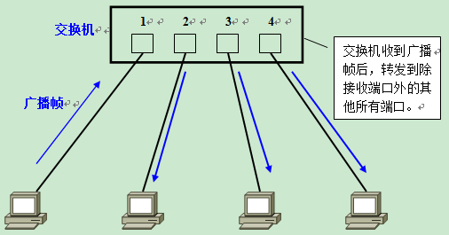
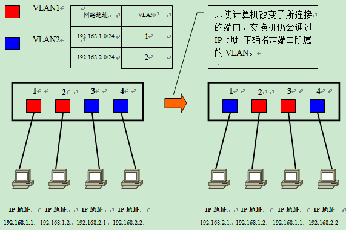
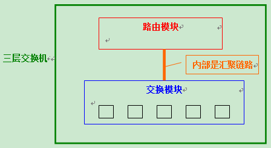
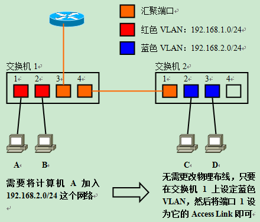
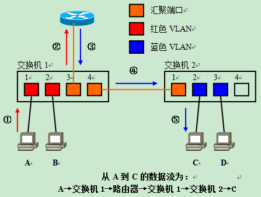

目录视图
目录视图 摘要视图
摘要视图 订阅
订阅
1.为什么需要VLAN
1.1 什么是VLAN？
VLAN（Virtual LAN），翻译成中文是“虚拟局域网”。LAN可以是由少数几台家用计算机构成的网络，也可以是数以百计的计算机构成的企业网络。VLAN所指的LAN特指使用路由器分割的网络——也就是广播域。
在此让我们先复习一下广播域的概念。广播域，指的是广播帧（目标MAC地址全部为1）所能传递到的范围，亦即能够直接通信的范围。严格地说，并不仅仅是广播帧，多播帧（Multicast Frame）和目标不明的单播帧（Unknown Unicast Frame）也能在同一个广播域中畅行无阻。
本来，二层交换机只能构建单一的广播域，不过使用VLAN功能后，它能够将网络分割成多个广播域。
1.2 未分割广播域时……
那么，为什么需要分割广播域呢？那是因为，如果仅有一个广播域，有可能会影响到网络整体的传输性能。具体原因，请参看附图加深理解。
图中，是一个由5台二层交换机（交换机1～5）连接了大量客户机构成的网络。假设这时，计算机A需要与计算机B通信。在基于以太网的通信中，必须在数据帧中指定目标MAC地址才能正常通信，因此计算机A必须先广播“ARP请求（ARP Request）信息”，来尝试获取计算机B的MAC地址。
交换机1收到广播帧（ARP请求）后，会将它转发给除接收端口外的其他所有端口，也就是Flooding了。接着，交换机2收到广播帧后也会Flooding。交换机3、4、5也还会Flooding。最终ARP请求会被转发到同一网络中的所有客户机上。
请大家注意一下，这个ARP请求原本是为了获得计算机B的MAC地址而发出的。也就是说：只要计算机B能收到就万事大吉了。可是事实上，数据帧却传遍整个网络，导致所有的计算机都收到了它。如此一来，一方面广播信息消耗了网络整体的带宽，另一方面，收到广播信息的计算机还要消耗一部分CPU时间来对它进行处理。造成了网络带宽和CPU运算能力的大量无谓消耗。
1.3 广播信息是那么经常发出的吗？
读到这里，您也许会问：广播信息真是那么频繁出现的吗？
答案是：是的！实际上广播帧会非常频繁地出现。利用TCP/IP协议栈通信时，除了前面出现的ARP外，还有可能需要发出DHCP、RIP等很多其他类型的广播信息。
ARP广播，是在需要与其他主机通信时发出的。当客户机请求DHCP服务器分配IP地址时，就必须发出DHCP的广播。而使用RIP作为路由协议时，每隔30秒路由器都会对邻近的其他路由器广播一次路由信息。RIP以外的其他路由协议使用多播传输路由信息，这也会被交换机转发（Flooding）。除了TCP/IP以外，NetBEUI、IPX和Apple Talk等协议也经常需要用到广播。例如在Windows下双击打开“网络计算机”时就会发出广播（多播）信息。（Windows XP除外……）
总之，广播就在我们身边。下面是一些常见的广播通信：
（1）ARP请求：建立IP地址和MAC地址的映射关系。
（2）RIP：一种路由协议。
（3）DHCP：用于自动设定IP地址的协议。
（4）NetBEUI：Windows下使用的网络协议。
（5）IPX：NovellNetware使用的网络协议。
（6）Apple Talk：苹果公司的Macintosh计算机使用的网络协议。
如果整个网络只有一个广播域，那么一旦发出广播信息，就会传遍整个网络，并且对网络中的主机带来额外的负担。因此，在设计LAN时，需要注意如何才能有效地分割广播域。
1.4 广播域的分割与VLAN的必要性
分割广播域时，一般都必须使用到路由器。使用路由器后，可以以路由器上的网络接口（LAN Interface）为单位分割广播域。
但是，通常情况下路由器上不会有太多的网络接口，其数目多在1～4个左右。随着宽带连接的普及，宽带路由器（或者叫IP共享器）变得较为常见，但是需要注意的是，它们上面虽然带着多个（一般为4个左右）连接LAN一侧的网络接口，但那实际上是路由器内置的交换机，并不能分割广播域。
况且使用路由器分割广播域的话，所能分割的个数完全取决于路由器的网络接口个数，使得用户无法自由地根据实际需要分割广播域。
与路由器相比，二层交换机一般带有多个网络接口。因此如果能使用它分割广播域，那么无疑运用上的灵活性会大大提高。
用于在二层交换机上分割广播域的技术，就是VLAN。通过利用VLAN，我们可以自由设计广播域的构成，提高网络设计的自由度。
2.实现VLAN的机制
2.1 实现VLAN的机制
在理解了“为什么需要VLAN”之后，接下来让我们来了解一下交换机是如何使用VLAN分割广播域的。
首先，在一台未设置任何VLAN的二层交换机上，任何广播帧都会被转发给除接收端口外的所有其他端口（Flooding）。例如，计算机A发送广播信息后，会被转发给端口2、3、4。

这时，如果在交换机上生成红、蓝两个VLAN；同时设置端口1、2属于红色VLAN、端口3、4属于蓝色VLAN。再从A发出广播帧的话，交换机就只会把它转发给同属于一个VLAN的其他端口——也就是同属于红色VLAN的端口2，不会再转发给属于蓝色VLAN的端口。
同样，C发送广播信息时，只会被转发给其他属于蓝色VLAN的端口，不会被转发给属于红色VLAN的端口。
就这样，VLAN通过限制广播帧转发的范围分割了广播域。上图中为了便于说明，以红、蓝两色识别不同的VLAN，在实际使用中则是用“VLAN ID”来区分的。
2.2 直观地描述VLAN
如果要更为直观地描述VLAN的话，我们可以把它理解为将一台交换机在逻辑上分割成了数台交换机。在一台交换机上生成红、蓝两个VLAN，也可以看作是将一台交换机换做一红一蓝两台虚拟的交换机。
在红、蓝两个VLAN之外生成新的VLAN时，可以想象成又添加了新的交换机。
但是，VLAN生成的逻辑上的交换机是互不相通的。因此，在交换机上设置VLAN后，如果未做其他处理，VLAN间是无法通信的。
明明接在同一台交换机上，但却偏偏无法通信——这个事实也许让人难以接受。但它既是VLAN方便易用的特征，又是使VLAN令人难以理解的原因。
2.3 需要VLAN间通信时怎么办
那么，当我们需要在不同的VLAN间通信时又该如何是好呢？
请大家再次回忆一下：VLAN是广播域。而通常两个广播域之间由路由器连接，广播域之间来往的数据包都是由路由器中继的。因此，VLAN间的通信也需要路由器提供中继服务，这被称作“VLAN间路由”。
VLAN间路由，可以使用普通的路由器，也可以使用三层交换机。其中的具体内容，等有机会再细说吧。在这里希望大家先记住不同VLAN间互相通信时需要用到路由功能。
3.VLAN的访问链接（Access Link）
3.1 交换机的端口类型
交换机的端口，可以分为以下两种：
（1）访问链接（Access Link）
（2）汇聚链接（Trunk Link）
接下来就让我们来依次学习这两种不同端口的特征。这一讲，首先学习“访问链接”。
3.2 访问链接
访问链接，指的是“只属于一个VLAN，且仅向该VLAN转发数据帧”的端口。在大多数情况下，访问链接所连的是客户机。
通常设置VLAN的顺序是：
（1）生成VLAN
（2）设定访问链接（决定各端口属于哪一个VLAN）
设定访问链接的手法，可以是事先固定的、也可以是根据所连的计算机而动态改变设定。前者被称为“静态VLAN”、后者自然就是“动态VLAN”了。
3.2.1 静态VLAN——基于端口
静态VLAN又被称为基于端口的VLAN（PortBased VLAN）。顾名思义，就是明确指定各端口属于哪个VLAN的设定方法。
由于需要一个个端口地指定，因此当网络中的计算机数目超过一定数字（比如数百台）后，设定操作就会变得烦杂无比。并且，客户机每次变更所连端口，都必须同时更改该端口所属VLAN的设定——这显然不适合那些需要频繁改变拓补结构的网络。
3.2.2 动态VLAN
另一方面，动态VLAN则是根据每个端口所连的计算机，随时改变端口所属的VLAN。这就可以避免上述的更改设定之类的操作。动态VLAN可以大致分为3类：
（1）基于MAC地址的VLAN（MAC Based VLAN）
（2）基于子网的VLAN（Subnet Based VLAN）
（3）基于用户的VLAN（User Based VLAN）
其间的差异，主要在于根据OSI参照模型哪一层的信息决定端口所属的VLAN。
3.2.2.1 基于MAC地址的VLAN
基于MAC地址的VLAN，就是通过查询并记录端口所连计算机上网卡的MAC地址来决定端口的所属。假定有一个MAC地址“A”被交换机设定为属于VLAN “10”，那么不论MAC地址为“A”的这台计算机连在交换机哪个端口，该端口都会被划分到VLAN 10中去。计算机连在端口1时，端口1属于VLAN 10；而计算机连在端口2时，则是端口2属于VLAN 10。
由于是基于MAC地址决定所属VLAN的，因此可以理解为这是一种在OSI的第二层设定访问链接的办法。
但是，基于MAC地址的VLAN，在设定时必须调查所连接的所有计算机的MAC地址并加以登录。而且如果计算机交换了网卡，还是需要更改设定。
3.2.2.2 基于IP地址的VLAN
基于子网的VLAN，则是通过所连计算机的IP地址，来决定端口所属VLAN的。不像基于MAC地址的VLAN，即使计算机因为交换了网卡或是其他原因导致MAC地址改变，只要它的IP地址不变，就仍可以加入原先设定的VLAN。

因此，与基于MAC地址的VLAN相比，能够更为简便地改变网络结构。IP地址是OSI参照模型中第三层的信息，所以我们可以理解为基于子网的VLAN是一种在OSI的第三层设定访问链接的方法。
基于用户的VLAN，则是根据交换机各端口所连的计算机上当前登录的用户，来决定该端口属于哪个VLAN。这里的用户识别信息，一般是计算机操作系统登录的用户，比如可以是Windows域中使用的用户名。这些用户名信息，属于OSI第四层以上的信息。
总的来说，决定端口所属VLAN时利用的信息在OSI中的层面越高，就越适于构建灵活多变的网络。
4.VLAN的汇聚链接（Trunk Link）
4.1 需要设置跨越多台交换机的VLAN时……
到此为止，我们学习的都是使用单台交换机设置VLAN时的情况。那么，如果需要设置跨越多台交换机的VLAN时又如何呢？
在规划企业级网络时，很有可能会遇到隶属于同一部门的用户分散在同一座建筑物中的不同楼层的情况，这时可能就需要考虑到如何跨越多台交换机设置VLAN的问题了。假设有如下图所示的网络，且需要将不同楼层的A、C和B、D设置为同一个VLAN。
这时最关键的就是“交换机1和交换机2该如何连接才好呢？”
最简单的方法，自然是在交换机1和交换机2上各设一个红、蓝VLAN专用的接口并互联了。
但是，这个办法从扩展性和管理效率来看都不好。例如，在现有网络基础上再新建VLAN时，为了让这个VLAN能够互通，就需要在交换机间连接新的网线。建筑物楼层间的纵向布线是比较麻烦的，一般不能由基层管理人员随意进行。并且，VLAN越多，楼层间（严格地说是交换机间）互联所需的端口也越来越多，交换机端口的利用效率低是对资源的一种浪费、也限制了网络的扩展。
为了避免这种低效率的连接方式，人们想办法让交换机间互联的网线集中到一根上，这时使用的就是汇聚链接（Trunk Link）。
4.2 何谓汇聚链接？
汇聚链接（Trunk Link）指的是能够转发多个不同VLAN的通信的端口。
汇聚链路上流通的数据帧，都被附加了用于识别分属于哪个VLAN的特殊信息。
现在再让我们回过头来考虑一下刚才那个网络如果采用汇聚链路又会如何呢？用户只需要简单地将交换机间互联的端口设定为汇聚链接就可以了。这时使用的网线还是普通的UTP线，而不是什么其他的特殊布线。图例中是交换机间互联，因此需要用交叉线来连接。
接下来，让我们具体看看汇聚链接是如何实现跨越交换机间的VLAN的。
A发送的数据帧从交换机1经过汇聚链路到达交换机2时，在数据帧上附加了表示属于红色VLAN的标记。
交换机2收到数据帧后，经过检查VLAN标识发现这个数据帧是属于红色VLAN的，因此去除标记后根据需要将复原的数据帧只转发给其他属于红色VLAN的端口。这时的转送，是指经过确认目标MAC地址并与MAC地址列表比对后只转发给目标MAC地址所连的端口。只有当数据帧是一个广播帧、多播帧或是目标不明的帧时，它才会被转发到所有属于红色VLAN的端口。
蓝色VLAN发送数据帧时的情形也与此相同。
通过汇聚链路时附加的VLAN识别信息，有可能支持标准的“IEEE 802.1Q”协议，也可能是Cisco产品独有的“ISL（Inter Switch Link）”。如果交换机支持这些规格，那么用户就能够高效率地构筑横跨多台交换机的VLAN。
另外，汇聚链路上流通着多个VLAN的数据，自然负载较重。因此，在设定汇聚链接时，有一个前提就是必须支持100Mbps以上的传输速度。
另外，默认条件下，汇聚链接会转发交换机上存在的所有VLAN的数据。换一个角度看，可以认为汇聚链接（端口）同时属于交换机上所有的VLAN。由于实际应用中很可能并不需要转发所有VLAN的数据，因此为了减轻交换机的负载、也为了减少对带宽的浪费，我们可以通过用户设定限制能够经由汇聚链路互联的VLAN。
关于IEEE 802.1Q和ISL的具体内容，将在下一讲中提到。
4.3 访问链接的总结
综上所述，设定访问链接的手法有静态VLAN和动态VLAN两种，其中动态VLAN又可以继续细分成几个小类。
其中基于子网的VLAN和基于用户的VLAN有可能是网络设备厂商使用独有的协议实现的，不同厂商的设备之间互联有可能出现兼容性问题；因此在选择交换机时，一定要注意事先确认。
下表总结了静态VLAN和动态VLAN的相关信息。
种类
解说
静态VLAN（基于端口的VLAN）
将交换机的各端口固定指派给VLAN
动态VLAN
基于MAC地址的VLAN
根据各端口所连计算机的MAC地址设定
基于子网的VLAN
根据各端口所连计算机的IP地址设定
基于用户的VLAN
根据端口所连计算机上登录用户设定
5.VLAN的汇聚方式——IEEE802.1Q与ISL
5.1 汇聚方式
在交换机的汇聚链接上，可以通过对数据帧附加VLAN信息，构建跨越多台交换机的VLAN。
附加VLAN信息的方法，最具有代表性的有：
（1）IEEE 802.1Q
（2）ISL
现在就让我们看看这两种协议分别如何对数据帧附加VLAN信息。
5.2 IEEE 802.1Q
IEEE 802.1Q，俗称“Dot One Q”，是经过IEEE认证的对数据帧附加VLAN识别信息的协议。
在此，请大家先回忆一下以太网数据帧的标准格式。
IEEE 802.1Q所附加的VLAN识别信息，位于数据帧中“发送源MAC地址”与“类别域”（Type Field）之间。具体内容为2字节的TPID（Tag Protocol IDentifier）和2字节的TCI（Tag Control Information），共计4字节。
在数据帧中添加了4字节的内容，那么CRC值自然也会有所变化。这时数据帧上的CRC是插入TPID、TCI后，对包括它们在内的整个数据帧重新计算后所得的值。
而当数据帧离开汇聚链路时，TPID和TCI会被去除，这时还会进行一次CRC的重新计算。
TPID字段在以太网报文中所处位置与不带VLAN Tag的报文中协议类型字段所处位置相同。TPID的值固定为0x8100，它标示网络帧承载的802.1Q类型，交换机通过它来确定数据帧内附加了基于IEEE 802.1Q的VLAN信息。而实质上的VLAN ID，是TCI中的12位元。由于总共有12位，因此最多可供识别4096个VLAN。
基于IEEE 802.1Q附加的VLAN信息，就像在传递物品时附加的标签。因此，它也被称作“标签型VLAN”（Tagging VLAN）。
5.3 ISL（Inter Switch Link）
ISL，是Cisco产品支持的一种与IEEE 802.1Q类似的、用于在汇聚链路上附加VLAN信息的协议。
使用ISL后，每个数据帧头部都会被附加26字节的“ISL包头（ISL Header）”，并且在帧尾带上通过对包括ISL包头在内的整个数据帧进行计算后得到的4字节CRC值。换而言之，就是总共增加了30字节的信息。
在使用ISL的环境下，当数据帧离开汇聚链路时，只要简单地去除ISL包头和新CRC就可以了。由于原先的数据帧及其CRC都被完整保留，因此无需重新计算CRC。
ISL有如用ISL包头和新CRC将原数据帧整个包裹起来，因此也被称为“封装型VLAN”（Encapsulated VLAN）。
需要注意的是，不论是IEEE802.1Q的“Tagging VLAN”，还是ISL的“Encapsulated VLAN”，都不是很严密的称谓。不同的书籍与参考资料中，上述词语有可能被混合使用，因此需要大家在学习时格外注意。
并且由于ISL是Cisco独有的协议，因此只能用于Cisco网络设备之间的互联。
6.VLAN间路由
6.1 VLAN间路由的必要性
根据目前为止学习的知识，我们已经知道两台计算机即使连接在同一台交换机上，只要所属的VLAN不同就无法直接通信。接下来我们将要学习的就是如何在不同的VLAN间进行路由，使分属不同VLAN的主机能够互相通信。
首先，先来复习一下为什么不同VLAN间不通过路由就无法通信。在LAN内的通信，必须在数据帧头中指定通信目标的MAC地址。而为了获取MAC地址，TCP/IP协议下使用的是ARP。ARP解析MAC地址的方法，则是通过广播。也就是说，如果广播报文无法到达，那么就无从解析MAC地址，亦即无法直接通信。
计算机分属不同的VLAN，也就意味着分属不同的广播域，自然收不到彼此的广播报文。因此，属于不同VLAN的计算机之间无法直接互相通信。为了能够在VLAN间通信，需要利用OSI参照模型中更高一层——网络层的信息（IP地址）来进行路由。关于路由的具体内容，以后有机会再详细解说吧。
路由功能，一般主要由路由器提供。但在今天的局域网里，我们也经常利用带有路由功能的交换机——三层交换机（Layer 3 Switch）来实现。接下来就让我们分别看看使用路由器和三层交换机进行VLAN间路由时的情况。
6.2 使用路由器进行VLAN间路由
在使用路由器进行VLAN间路由时，与构建横跨多台交换机的VLAN时的情况类似，我们还是会遇到“该如何连接路由器与交换机”这个问题。路由器和交换机的接线方式，大致有以下两种：
（1）将路由器与交换机上的每个VLAN分别连接
（2）不论VLAN有多少个，路由器与交换机都只用一条网线连接
最容易想到的，当然还是“把路由器和交换机以VLAN为单位分别用网线连接”了。将交换机上用于和路由器互联的每个端口设为访问链接（Access Link），然后分别用网线与路由器上的独立端口互联。如下图所示，交换机上有2个VLAN，那么就需要在交换机上预留2个端口用于与路由器互联；路由器上同样需要有2个端口；两者之间用2条网线分别连接。
如果采用这个办法，大家应该不难想象它的扩展性很成问题。每增加一个新的VLAN，都需要消耗路由器的端口和交换机上的访问链接，而且还需要重新布设一条网线。而路由器，通常不会带有太多LAN接口的。新建VLAN时，为了对应增加的VLAN所需的端口，就必须将路由器升级成带有多个LAN接口的高端产品，这部分成本、还有重新布线所带来的开销，都使得这种接线法成为一种不受欢迎的办法。
那么，第二种办法“不论VLAN数目多少，都只用一条网线连接路由器与交换机”呢？当使用一条网线连接路由器与交换机、进行VLAN间路由时，需要用到汇聚链接。
具体实现过程为：首先将用于连接路由器的交换机端口设为汇聚链接（Trunk Link），而路由器上的端口也必须支持汇聚链路。双方用于汇聚链路的协议自然也必须相同。接着在路由器上定义对应各个VLAN的“子接口”（Sub Interface）。尽管实际与交换机连接的物理端口只有一个，但在理论上我们可以把它分割为多个虚拟端口。
VLAN将交换机从逻辑上分割成了多台，因而用于VLAN间路由的路由器，也必须拥有分别对应各个VLAN的虚拟接口。
采用这种方法的话，即使之后在交换机上新建VLAN，仍只需要一条网线连接交换机和路由器。用户只需要在路由器上新设一个对应新VLAN的子接口就可以了。与前面的方法相比，扩展性要强得多，也不用担心需要升级LAN接口数不足的路由器或是重新布线。
6.3 同一VLAN内的通信
接下来，我们继续学习使用汇聚链路连接交换机与路由器时，VLAN间路由是如何进行的。如下图所示，为各台计算机以及路由器的子接口设定IP地址。
红色VLAN（VLAN ID=1）的网络地址为192.168.1.0/24，蓝色VLAN（VLAN ID=2）的网络地址为192.168.2.0/24。各计算机的MAC地址分别为A/B/C/D，路由器汇聚链接端口的MAC地址为R。交换机通过对各端口所连计算机MAC地址的学习，生成如下的MAC地址列表。
端口
MAC地址
VLAN
1
A
1
2
B
1
3
C
2
4
D
2
5
－
－
6
R
汇聚
首先考虑计算机A与同一VLAN内的计算机B之间通信时的情形。
计算机A发出ARP请求信息，请求解析B的MAC地址。交换机收到数据帧后，检索MAC地址列表中与收信端口同属一个VLAN的表项。结果发现，计算机B连接在端口2上，于是交换机将数据帧转发给端口2，最终计算机B收到该帧。收发信双方同属一个VLAN之内的通信，一切处理均在交换机内完成。
6.4 不同VLAN间的通信
接下来是这一讲的核心内容，不同VLAN间的通信。让我们来考虑一下计算机A与计算机C之间通信时的情况。
计算机A从通信目标的IP地址（192.168.2.1）得出C与本机不属于同一个网段。因此会向设定的默认网关（DefaultGateway，GW）转发数据帧。在发送数据帧之前，需要先用ARP获取路由器的MAC地址。
得到路由器的MAC地址R后，接下来就是按图中所示的步骤发送往C去的数据帧。①的数据帧中，目标MAC地址是路由器的地址R、但内含的目标IP地址仍是最终要通信的对象C的地址。这一部分的内容，涉及到局域网内经过路由器转发时的通信步骤，有机会再详细解说吧。
交换机在端口1上收到①的数据帧后，检索MAC地址列表中与端口1同属一个VLAN的表项。由于汇聚链路会被看作属于所有的VLAN，因此这时交换机的端口6也属于被参照对象。这样交换机就知道往MAC地址R发送数据帧，需要经过端口6转发。
从端口6发送数据帧时，由于它是汇聚链接，因此会被附加上VLAN识别信息。由于原先是来自红色VLAN的数据帧，因此如图中②所示，会被加上红色VLAN的识别信息后进入汇聚链路。路由器收到②的数据帧后，确认其VLAN识别信息，由于它是属于红色VLAN的数据帧，因此交由负责红色VLAN的子接口接收。
接着，根据路由器内部的路由表，判断该向哪里中继。
由于目标网络192.168.2.0/24是蓝色VLAN，，且该网络通过子接口与路由器直连，因此只要从负责蓝色VLAN的子接口转发就可以了。这时，数据帧的目标MAC地址被改写成计算机C的目标地址；并且由于需要经过汇聚链路转发，因此被附加了属于蓝色VLAN的识别信息。这就是图中③的数据帧。
交换机收到③的数据帧后，根据VLAN标识信息从MAC地址列表中检索属于蓝色VLAN的表项。由于通信目标——计算机C连接在端口3上、且端口3为普通的访问链接，因此交换机会将数据帧去除VLAN识别信息后（数据帧④）转发给端口3，最终计算机C才能成功地收到这个数据帧。
进行VLAN间通信时，即使通信双方都连接在同一台交换机上，也必须经过：“发送方——交换机——路由器——交换机——接收方”这样一个流程。
7.三层交换机
7.1 使用路由器进行VLAN间路由时的问题
现在，我们知道只要能提供VLAN间路由，就能够使分属不同VLAN的计算机互相通信。但是，如果使用路由器进行VLAN间路由的话，随着VLAN之间流量的不断增加，很可能导致路由器成为整个网络的瓶颈。
交换机使用被称为ASIC（ApplicationSpecified Integrated Circuit）的专用硬件芯片处理数据帧的交换操作，在很多机型上都能实现以缆线速度（Wired Speed）交换。而路由器，则基本上是基于软件处理的。即使以缆线速度接收到数据包，也无法在不限速的条件下转发出去，因此会成为速度瓶颈。就VLAN间路由而言，流量会集中到路由器和交换机互联的汇聚链路部分，这一部分尤其特别容易成为速度瓶颈。并且从硬件上看，由于需要分别设置路由器和交换机，在一些空间狭小的环境里可能连设置的场所都成问题。
7.2 三层交换机（Layer 3 Switch）
为了解决上述问题，三层交换机应运而生。三层交换机，本质上就是“带有路由功能的（二层）交换机”。路由属于OSI参照模型中第三层网络层的功能，因此带有第三层路由功能的交换机才被称为“三层交换机”。
关于三层交换机的内部结构，可以参照下面的简图。

在一台本体内，分别设置了交换机模块和路由器模块；而内置的路由模块与交换模块相同，使用ASIC硬件处理路由。因此，与传统的路由器相比，可以实现高速路由。并且，路由与交换模块是汇聚链接的，由于是内部连接，可以确保相当大的带宽。
7.2.1 使用三层交换机进行VLAN间路由（VLAN内通信）
在三层交换机内部数据究竟是怎样传播的呢？基本上，它和使用汇聚链路连接路由器与交换机时的情形相同。
假设有如下图所示的4台计算机与三层交换机互联。当使用路由器连接时，一般需要在LAN接口上设置对应各VLAN的子接口；而三层交换机则是在内部生成“VLAN接口”（VLAN Interface）。VLAN接口，是用于各VLAN收发数据的接口。（注：在Cisco的Catalyst系列交换机上，VLAN Interface被称为SVI——Switched Virtual Interface）
为了与使用路由器进行VLAN间路由对比，让我们同样来考虑一下计算机A与计算机B之间通信时的情况。首先是目标地址为B的数据帧被发到交换机；通过检索同一VLAN的MAC地址列表发现计算机B连在交换机的端口2上；因此将数据帧转发给端口2。
7.2.2 使用三层交换机进行VLAN间路由（VLAN间通信）
接下来设想一下计算机A与计算机C间通信时的情形。针对目标IP地址，计算机A可以判断出通信对象不属于同一个网络，因此向默认网关发送数据（Frame 1）。
交换机通过检索MAC地址列表后，经由内部汇聚链接，将数据帧转发给路由模块。在通过内部汇聚链路时，数据帧被附加了属于红色VLAN的VLAN识别信息（Frame 2）。
路由模块在收到数据帧时，先由数据帧附加的VLAN识别信息分辨出它属于红色VLAN，据此判断由红色VLAN接口负责接收并进行路由处理。因为目标网络192.168.2.0/24是直连路由器的网络、且对应蓝色VLAN；因此，接下来就会从蓝色VLAN接口经由内部汇聚链路转发回交换模块。在通过汇聚链路时，这次数据帧被附加上属于蓝色VLAN的识别信息（Frame 3）。
交换机收到这个帧后，检索蓝色VLAN的MAC地址列表，确认需要将它转发给端口3。由于端口3是通常的访问链接，因此转发前会先将VLAN识别信息去除（Frame 4）。最终，计算机C成功地收到交换机转发来的数据帧。
整体的流程，与使用外部路由器时的情况十分相似——都需要经过“发送方→交换模块→路由模块→交换模块→接收方”。
8.加速VLAN间通信的手段
8.1 流（Flow）
根据到此为止的学习，我们已经知道VLAN间路由，必须经过外部的路由器或是三层交换机的内置路由模块。但是，有时并不是所有的数据都需要经过路由器（或路由模块）。
例如，使用FTP（File Transfer Protocol）传输容量为数MB以上的较大的文件时，由于MTU的限制，IP协议会将数据分割成小块后传输、并在接收方重新组合。这些被分割的数据，“发送的目标”是完全相同的。发送目标相同，也就意味着同样的目标IP地址、目标端口号（注：特别强调一下，这里指的是TCP/UDP端口）。自然，源IP地址、源端口号也应该相同。这样一连串的数据流被称为“流”（Flow）。
只要将流最初的数据正确地路由以后，后继的数据理应也会被同样地路由。
据此，后继的数据不再需要路由器进行路由处理；通过省略反复进行的路由操作，可以进一步提高VLAN间路由的速度。
8.2 加速VLAN间路由的机制
接下来，让我们具体考虑一下该如何使用三层交换机进行高速VLAN间路由。
首先，整个流的第一块数据，照常由交换机转发→路由器路由→再次由交换机转发到目标所连端口。这时，将第一块数据路由的结果记录到缓存里保存下来。需要记录的信息有：
（1）目标IP地址
（2）源IP地址
（3）目标TCP/UDP端口号
（4）源TCP/UDP端口号
（5）接收端口号（交换机）
（6）转发端口号（交换机）
（7）转发目标MAC地址
等等。
同一个流的第二块以后的数据到达交换机后，直接通过查询先前保存在缓存中的信息查出“转发端口号”后就可以转发给目标所连端口了。
这样一来，就不需要再一次次经由内部路由模块中继，而仅凭交换机内部的缓存信息就足以判断应该转发的端口。
这时，交换机会对数据帧进行由路由器中继时相似的处理，例如改写MAC地址、IP包头中的TTL和Check Sum校验码信息等。
通过在交换机上缓存路由结果，实现了以缆线速度（Wired Speed）接收发送方传输来数据的数据、并且能够全速路由、转发给接收方。
需要注意的是，类似的加速VLAN间路由的手法多由各厂商独有的技术所实现，并且该功能的称谓也因厂商而异。例如，在Cisco的Catalyst系列交换机上，这种功能被称为“多层交换”（Multi Layer Switching）。另外，除了三层交换机的内部路由模块，外部路由器中的某些机型也支持类似的高速VLAN间路由机制。
9.传统型路由器存在的意义
9.1 路由器的必要性
三层交换机的价格，在问世之初非常昂贵，但是现在它们的价格已经下降了许多。目前国外一些廉价机型的售价，折合成人民币后仅为一万多元，而且还在继续下降中。
既然三层交换机能够提供比传统型路由器更为高速的路由处理，那么网络中还有使用路由器的必要吗？
答案是：“是”。
使用路由器的必要性，主要表现在以下几个方面：
（1）用于与WAN连接
三层交换机终究是“交换机”。也就是说，绝大多数机型只配有LAN（以太网）接口。在少数高端交换机上也有用于连接WAN的串行接口或是ATM接口，但在大多数情况下，连接WAN还是需要用到路由器。
（2）保证网络安全
在三层交换机上，通过数据包过滤也能确保一定程度的网络安全。但是使用路由器所提供的各种网络安全功能，用户可以构建更为安全可靠的网络。
路由器提供的网络安全功能中，除了最基本的数据包过滤功能外，还能基于IPSec构建VPN（VirtualPrivate Network）、利用RADIUS进行用户认证等等。
（3）支持除TCP/IP以外的异构网络架构
尽管TCP/IP已经成为当前网络协议架构的主流，但还有不少网络利用Novell Netware下的IPX/SPX或Macintosh下的AppleTalk等网络协议。三层交换机中，除了部分高端机型外基本上还只支持TCP/IP。因此，在需要使用除TCP/IP之外其他网络协议的环境下，路由器还是必不可少的。
注：在少数高端交换机上，也能支持上述路由器的功能。例如Cisco的Catalyst 6500系列，就可以选择与WAN连接的接口模块；还有可选的基于IPSec实现VPN的模块；并且也能支持TCP/IP以外的其他网络协议。
9.2 路由器和交换机配合构建LAN的实例
下面让我们来看一个路由器和交换机搭配构建LAN的实例。
利用在各楼层配置的二层交换机定义VLAN，连接TCP/IP客户计算机。各楼层间的VLAN间通信，利用三层交换机的高速路由加以实现。如果网络环境要求高可靠性，还可以考虑冗余配置三层交换机。
与WAN的连接，则通过带有各种网络接口的路由器进行。并且，通过路由器的数据包过滤和VPN等功能实现网络安全。此外，使用路由器还能支持Novell Netware等TCP/IP之外的网络。
只有在充分掌握了二层、三层交换机以及传统路由器的基础上，才能做到物竞其用，构筑出高效率、高性价比的网络。
10.使用VLAN设计局域网
参考：10.1 使用VLAN设计局域网的特点
通过使用VLAN构建局域网，用户能够不受物理链路的限制而自由地分割广播域。
另外，通过先前提到的路由器与三层交换机提供的VLAN间路由，能够适应灵活多变的网络构成。
但是，由于利用VLAN容易导致网络构成复杂化，因此也会造成整个网络的组成难以把握。
可以这样说，在利用VLAN时，除了有“网络构成灵活多变”这个优点外，还搭配着“网络构成复杂化”这个缺点。
下面，就让我们来看看具体的实例。
10.2 不使用VLAN的局域网中网络构成的改变
假设有如图所示的由1台路由器、2台交换机构成的“不使用VLAN构建”的网络。
图中的路由器，带有2个LAN接口。左侧的网络是192.168.1.0/24，右侧是192.168.2.0/24。
现在如果想将192.168.1.0/24这个网络上的计算机A转移到192.168.2.0/24上去，就需要改变物理连接、将A接到右侧的交换机上。
并且，当需要新增一个地址为192.168.3.0/24的网络时，还要在路由器上再占用一个LAN接口并添置一台交换机。而由于这台路由器上只带了2个LAN接口，因此为了新增网络还必须将路由器升级为带有3个以上LAN接口的产品。
10.3 使用VLAN的局域网中网络构成的改变
接下来再假设有一个由1台路由器、2台交换机构成的“使用VLAN”的局域网。交换机与交换机、交换机与路由器之间均为汇聚链路；并且假设192.168.1.0/24对应红色VLAN、192.168.2.0/24对应蓝色VLAN。

需要将连接在交换机1上192.168.1.0/24这个网段的计算机A转属192.168.2.0/24时，无需更改物理布线。只要在交换机上生成蓝色VLAN，然后将计算机A所连的端口1加入到蓝色VLAN中去，使它成为访问链接即可。
然后，根据需要设定计算机A的IP地址、默认网关等信息就可以了。如果IP地址相关的设定是由DHCP获取的，那么在客户机方面无需进行任何设定修改，就可以在不同网段间移动。
利用VLAN后，我们可以在免于改动任何物理布线的前提下，自由进行网络的逻辑设计。如果所处的工作环境恰恰需要经常改变网络布局，那么利用VLAN的优势就非常明显了。
并且，当需要新增一个地址为192.168.3.0/24的网段时，也只需要在交换机上新建一个对应192.168.3.0/24的VLAN，并将所需的端口加入它的访问链路就可以了。
如果网络环境中还需要利用外部路由器，则只要在路由器的汇聚端口上新增一个子接口的设定就可以完成全部操作，而不需要消耗更多的物理接口（LAN接口）。要使用的是三层交换机内部的路由模块，则只需要新设一个VLAN接口即可。
网络环境的成长，往往是难以预测的，很可能经常会出现需要分割现有网络或是增加新网络的情况。而充分活用VLAN后，就可以轻易地解决这些问题。
10.4 利用VLAN而导致的网络结构复杂化
虽然利用VLAN可以灵活地构建网络，但是同时，它也带来了网络结构复杂化的问题。
特别是由于数据流纵横交错，一旦发生故障时，准确定位并排除故障会比较困难。
为了便于理解数据流向的复杂化，假设有下图所示的网络。计算机A向计算机C发送数据时，数据流的整体走向如下：
计算机A→交换机1→路由器→交换机1→交换机2→计算机C

首先计算机A向交换机1送出数据（①），其后数据被转发给路由器（②）进行VLAN间路由。路由后的数据，再从汇聚链路返回交换机1（③）。由于通信目标计算机C并不直连在交换机1上，因此还需要经过汇聚链路转发到交换机2（④）。在交换机2上，数据最终被转发到C所连的端口2上，这才完成整个流程（⑤）。
在这个例子中，仅由2台交换机构成网络，其数据流已经如此复杂，如果构建横跨多台交换机的VLAN的话，每个数据流的流向显然会更加难以把握。
10.5 网络的逻辑结构与物理结构
为了对应日渐复杂化的数据流，管理员需要从“逻辑结构”与“物理结构”两方面入手，把握好网络的现状。
物理结构，指的是从物理层和数据链路层观察到的网络的现状，表示了网络的物理布线形态和VLAN的设定等等。
而逻辑结构，则表示从网络层以上的层面观察到的网络结构。下面我们就试着以路由器为中心分析一个IP网络的逻辑结构。
还是先前的那个例子，描绘了布线形态和VLAN设定的“物理结构”如下图所示。
分析这个物理结构并转换成以路由器为中心的逻辑结构后，会得到如下的逻辑结构图。当我们需要进行路由或是数据包过滤的设定时，都必须在逻辑结构的基础上进行。
把握这两种网络结构图的区别是十分重要的，特别是在VLAN和三层交换机大行其道的现代企业级网络当中。
《VLAN原理详解》
《VLAN基本原理-ZTE》
《VLAN 技术原理-HW》
《虚拟局域网（VLAN）中端口tagged和untagged在多种情况下的作用》
《Linux 下VLAN数据包格式及vconfig命令测试》
《话说WAYOS中所谓利用IP VLAN来实现用户隔离的作用分析》
《H618C刷OpenWrt并支持IPTV VLAN硬件处理的方法》
- 顶
- 22
- 踩
- 0
- 上一篇DMA描述符及映射
- 下一篇Transact-SQL数据库基本操作
- 猜你在找
- 机器学习之概率与统计推断
- 机器学习之数学基础
- 机器学习之凸优化
- 机器学习之矩阵
- 响应式布局全新探索
- 探究Linux的总线、设备、驱动模型
- 深度学习基础与TensorFlow实践
- 深度学习之神经网络原理与实战技巧
- 前端开发在线峰会
- TensorFlow实战进阶：手把手教你做图像识别应用


请LZ有空把这部分分析下，谢谢。